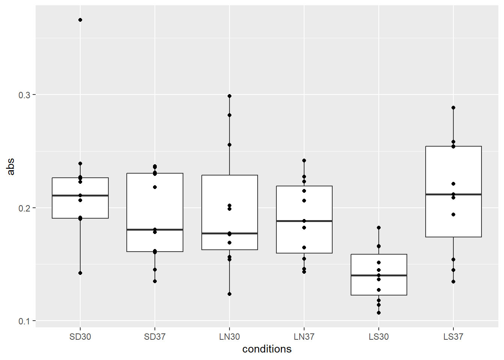
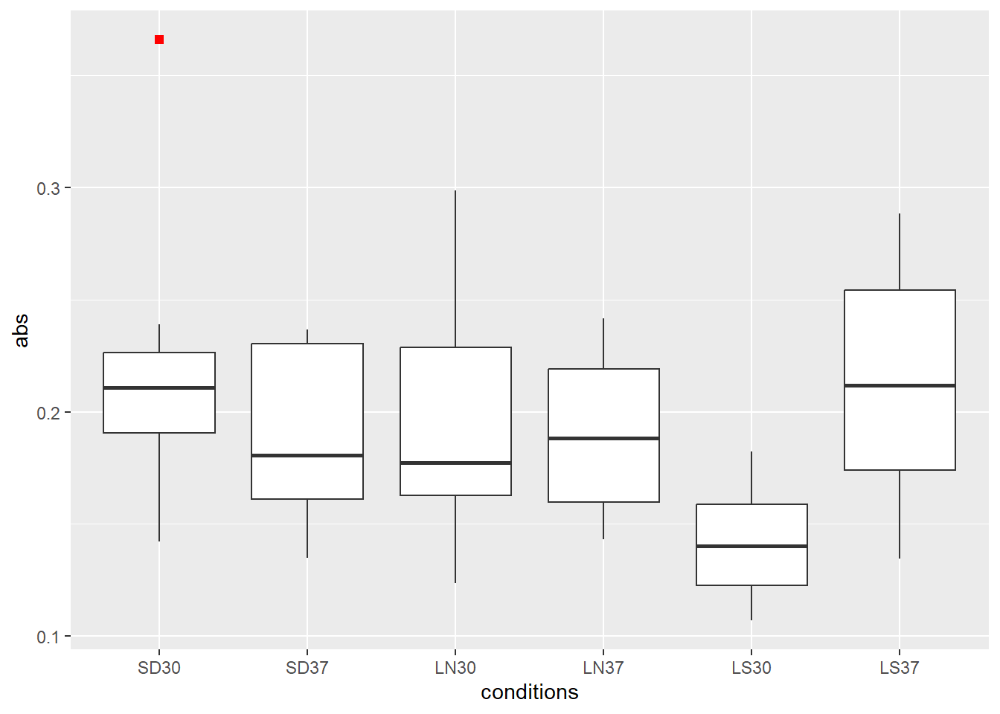
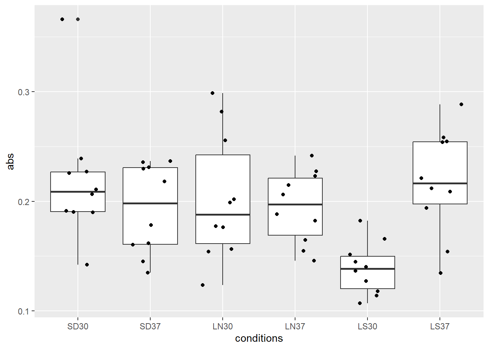
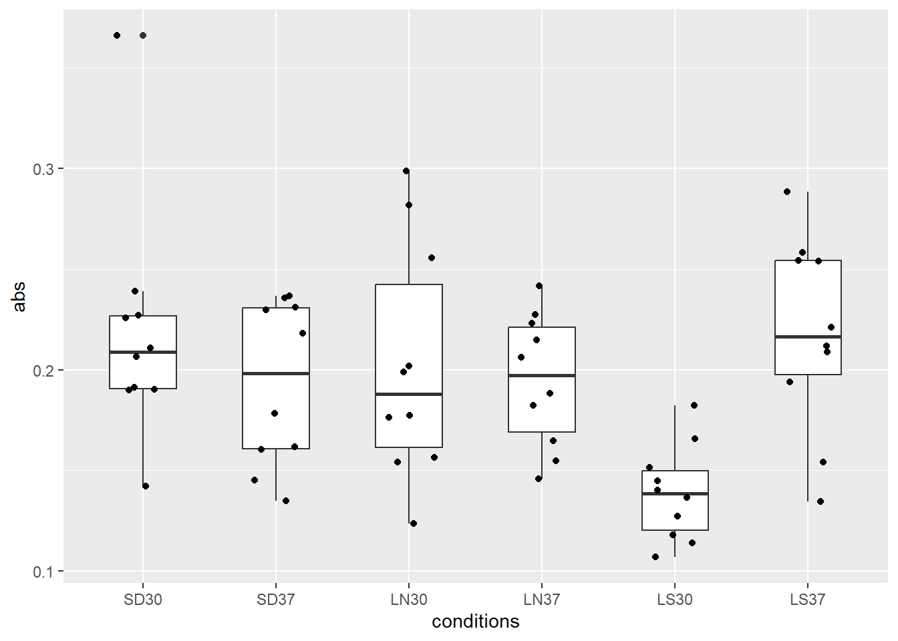
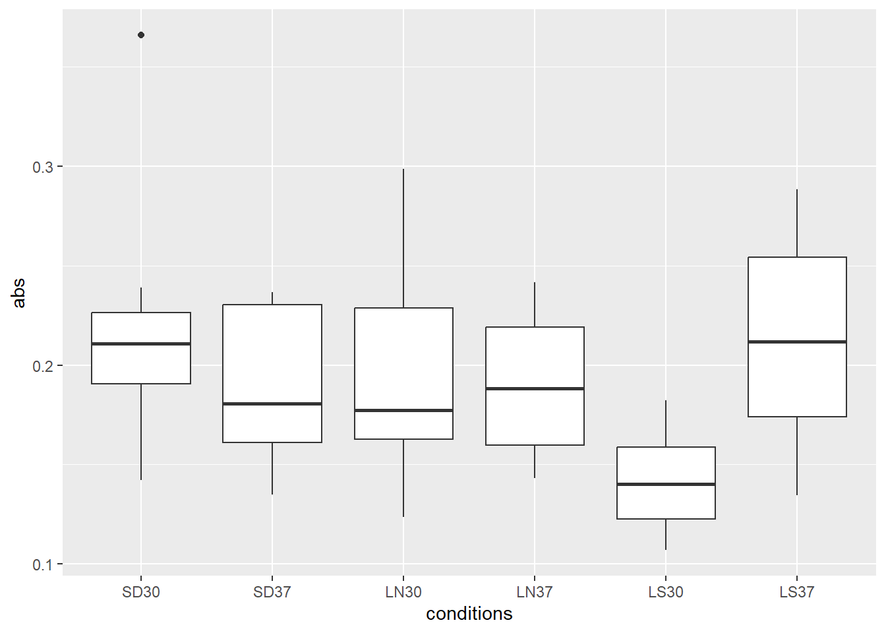
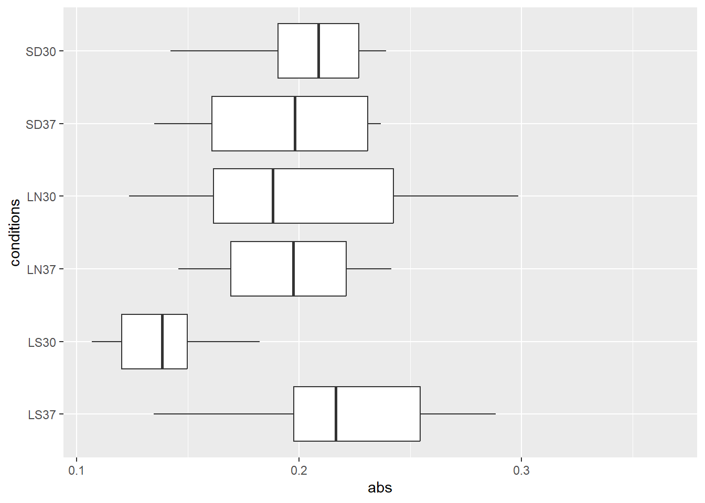

df <- c(10, 12, 14, 16, 20, 25, 30, 41, 8, 15, 31)
df [1] 10 12 14 16 20 25 30 41 8 15 31In this chapter, we will be discussing how to create a box and whisker plot for the representation of your bioinformatic data. We will also discuss ways that you can adjust the box and whisker plots to show more nuanced aspects of the expression of a gene. First, it is important to introduce the concept of box and whisker plots.
A box and whisker plot is used to show the graphical representation of variation in data. Included in these plots are the minimum value, the maximum value, second quartile, third quartile, and the median value. The visual representation of these can be shown through points on the box and whisker plot or through the lines shown on a box and whisker plot.
Before we can begin to process data, we need to have R and RStudio installed on our computer. The next step is to load your data into the RStudio. To do this, please follow the guide provided in File Download Instructions. Afterwards, we need to install some packages. The main package is tidyverse which allows for ease of writing and editing our code.
After completing this step, you should have all the tools necessary to create a simple box and whisker plot with your data. The next step is to learn how to call the function to create a box and whisker plot. Afterwards, we will discuss what functionality base R has to customize the box and whisker plot.
In this section, we will view the simplistic box plot that comes with base R. Afterwards, there will be a note about some small adjustment functions for the customization of the base R box plot code. Following this section will be the discussion of box plots with ggplot2, which allows for greater levels of customization.
Before we get into the customization options for the box and whisker plot, we need to see what a simple box plot code looks like through R.
To create a simple box and whisker plot in R, you will use the boxplot command. To use the base R boxplot code, you will need to have a list of your data. For explanation purposes, I will create one below:
df <- c(10, 12, 14, 16, 20, 25, 30, 41, 8, 15, 31)
df [1] 10 12 14 16 20 25 30 41 8 15 31Now that the data is created and assigned to the df object, I will use the boxplot function on the data. Remember that this is the most basic form of a box plot, and that customization will be in a later step.
boxplot(df)
Now that we have covered how to make a simple box plot, we will discuss how to add customization to the box plots in base R.
In the base boxplot code, you can use the following functions to customize its appearance:
notch = TRUEcol = c("red", "blue") (can change to any color)main = "_", xlab = "_", and ylab = "_"horizontal = TRUEggplot2Now that we have covered some basic box plots using the base R functions, we can cover more complex box plots using ggplot2. The first step is to install the package.
ggplot2 Box PlotNow we can move on to creating simple box plots using the ggplot2 function. Using this function, you will need to have a data frame or matrix format for your data. Below, I will create a subset of data for the purposes of explaining how ggplot2 uses the data. Here, I create a Verification Data object from the Verification Data.xslx file. Afterwards, I remove columns with replicates, the zero hour, and the verification position per hour. Then, I remove the extra column numbering the data rows. Finally, I create a smaller subset of the data with the first ten rows of data and the eight columns, consisting of verification position, hour, and the six conditions. Finally, I remove the prefix “norm” and the suffix “avg” from the condition columns.
After creating that data set, you will be able to view what the data set looks like as an object. For the sake of brevity, I limited the data above to eight rows.
| ver_pos | hour | SD30 | LS30 | LN30 | SD37 | LS37 | LN37 |
|---|---|---|---|---|---|---|---|
| 2401A01 | 1 | 0.1912153 | 0.1821914 | 0.2020207 | 0.2180720 | 0.2540920 | 0.1883766 |
| 2401A02 | 1 | 0.3659603 | 0.1449665 | 0.2557276 | 0.2310657 | 0.2581911 | 0.2274759 |
| 2401A03 | 1 | 0.2256788 | 0.1402406 | 0.2986441 | 0.2297805 | 0.2544110 | 0.2415338 |
| 2401A04 | 1 | 0.1900404 | 0.1658918 | 0.1772859 | 0.1782705 | 0.2088483 | 0.1547356 |
| 2401A05 | 1 | 0.2391607 | 0.1140548 | 0.2816632 | 0.2368026 | 0.2884579 | 0.2149432 |
| 2401A06 | 1 | 0.2109853 | 0.1069272 | 0.1988912 | 0.2357950 | 0.2210966 | 0.2231634 |
| 2401A07 | 1 | 0.2270965 | 0.1271814 | 0.1764542 | 0.1605225 | 0.2117411 | 0.2062340 |
| 2401A08 | 1 | 0.1902920 | 0.1367046 | 0.1542897 | 0.1453290 | 0.1939182 | 0.1823381 |
Now that the table has been made, we can use the data to create a box plot. The first step is to use the ggplot function to initiate a plot and use the geom_boxplot to create a box plot. To do this, I will use the function, pivot_longer. After pivoting the data frame, I will show you the data.
df_bw <- df_box %>%
pivot_longer(cols = !c(1:2),
names_to = "conditions",
values_to = "abs")
df_bw_1 <- df_bw %>%
head(8)Once again, for the sake of brevity, I have limited this table to the first 8 rows. Though there will be more data when you run the code than shown here.
| ver_pos | hour | conditions | abs |
|---|---|---|---|
| 2401A01 | 1 | SD30 | 0.1912153 |
| 2401A01 | 1 | LS30 | 0.1821914 |
| 2401A01 | 1 | LN30 | 0.2020207 |
| 2401A01 | 1 | SD37 | 0.2180720 |
| 2401A01 | 1 | LS37 | 0.2540920 |
| 2401A01 | 1 | LN37 | 0.1883766 |
| 2401A02 | 1 | SD30 | 0.3659603 |
| 2401A02 | 1 | LS30 | 0.1449665 |
Now that we have successfully pivoted the data frame, we can apply it to ggplot to create our box plot. To do this, specify what data you want to use after the ggplot function, and specify the aesthetic. In this case, I wanted the conditions to be on the x-axis and the absorbance values to be on the y-axis. This is easily interchangeable. Afterwards, add a + and write the geom_boxplot() line. Then run your code.
ggplot(df_bw, aes(x = conditions, y = abs))+
geom_boxplot()
Here, you will see that there is an outlier shown above the “SD30” condition. In a later step, we will explain how you can find which peice of data this outlier is and label it. Though for now, all data is represented by the shown box and whisker plot and its singular outlier.
ggplot2Using ggplot, there are many ways that you can customize your box plot graph. In the following sections, we will discuss many ways that you can change your graphs and what they mean. The first on our list is changing the colors of the box plots.
Sometimes, when you upload data to ggplot, your order of your data will be moved around. To remedy this, we need to create a custom order for our data frame. To do so, follow the example shown below:
desired_order <- c("SD30", "SD37", "LN30", "LN37", "LS30", "LS37")
df_bw$conditions <- factor(df_bw$conditions, levels = desired_order)geom_pointThe first major customization, besides creating an order, that is allowed in ggplot2 is the ability to create points on your graph. This can be done by using the geom_point argument. An example is provided below:
df_bw %>%
ggplot(
aes(x = conditions, y = abs)
)+
geom_boxplot()+
geom_point()
After creating the basic points, we can customize this even more! In ggplot2, different shape types are described to a certain number. By changing the number, your points in your graph will change. Below is the list for numbers 0-15 and I will use shape 15 in a ggplot code for a boxplot.
0. Box
1. Circle
2. Triangle
3. Cross
4. "X"
5. Diamond
6. Triangle (facing downward)
7. Box with "X"
8. Asterisk
9. (Rotated) Box with Cross
10. Circle with Cross
11. Star of David
12. Box with Cross
13. Circle with "X"
14. Box with Traingle
15. Solid Boxdf_bw %>%
ggplot(aes(x=conditions, y=abs))+
geom_boxplot()+
geom_point(shape = 15)
You might notice, though, that you can’t tell how many points might be overlapping, this is also the case for the outlier. You are not sure how many outliers are represented. So, first we will cover how to make our outlier stand out, and then how to jitter our points on the graph so that we can represent all data points on the graph.
The same shapes shown in geom_point are used in in geom_jitter and the outliers argument of geom_boxplot. In the case of the outlier argument, there is more customization options that need to be addressed. For the sake of brevity, I will make a list below of the customization options:
outlier.shape = NA: removes outliers from the graphThe next step is to create a box and whisker plot with the outlier customized. In this case, I customized the outlier to be a solid red box with a thickness of 1. You should notice, though, that I did not include geom_point in the example below. This is due to the application of the geom_boxplot code. The geom_boxplot creates an outlier by default, adding lines like geom_point, and geom_jitter (our next section) we create that point for a second time. In the geom_jitter section, I will explain the fix to this residual artifact.
df_bw %>%
ggplot(
aes(x=conditions,y=abs)
)+
geom_boxplot(outlier.shape = 15, outlier.stroke = 1, outlier.colour = "red")
Another way to customize your outliers in your box plots is to create a custom label for your outlier. In this case, we will be using a new data file, known as df_test with more than one outlier in the total data set.
The first step is to create a flag for our outliers. To do this, we group the data by our conditions, then calculate the Q1 and Q3 levels of absorbance. Afterwards, we calculate the IQR and create the fenced. Then, we check the absorbance of all data to see if there is outlier above or below the fences. Finally, we ungroup the data so it can be used in a later step.
data_with_outlier_flag <- df_test %>%
group_by(conditions) %>%
mutate(
Q1 = quantile(abs, 0.25),
Q3 = quantile(abs, 0.75),
IQR = Q3 - Q1,
lower_fence = Q1 - 1.5 * IQR,
upper_fence = Q3 + 1.5 * IQR,
is_outlier = abs < lower_fence | abs > upper_fence
) %>%
ungroup()Now, we need to identify the name of the outlier. In this case, we will use the data frame we made previously and filter to only have the data confirmed as an outlier. Afterwards, we create an outlier label of the verification position of the outlier.
outlier_points_data <- data_with_outlier_flag %>%
filter(is_outlier) %>%
mutate(outlier_label = paste0(ver_pos))To put it all together, we will use the same geom_boxplot function we have used previously, and now add geom_text into the mix. When using geom_text we want to specify we are using our new data frame and copy the aesthetics of the boxplots. Then, we add the outlier label to the point. We color it black, just like the point in the boxplot function, and give it a vertical adjustment of negative 1. In this case, vjust needs to be negative, as the positive direction is towards 0 and we want the label to be above the point. Finally, we can specify the size of the label.
ggplot(df_test,
aes(x=conditions, y=abs))+
geom_boxplot(outlier.shape = 15, outlier.color = "black", outlier.stroke = 2)+
geom_text(data = outlier_points_data,
aes(x = conditions, y = abs, label = outlier_label),
color = "black",
vjust = -1,
size = 3)
geom_jitterNow that we have covered how to label our outlier on our graph, we will move into jittered points on our graph. To display your data on the box and whisker plots, you will need to use the geom_jitter argument. However, when you are using this line, be careful about artifacts. An example of how to use jitter is shown below, where I use a distance of 0.3 between the points:
Jacob or Dylan: Explain what jitter does more
df_bw %>%
ggplot(
aes(x = conditions, y = abs)
)+
geom_boxplot()+
geom_jitter(width = 0.3)
As you can see, the outlier is represented twice. To check if the outlier is actually written twice in our data set, we can use the outlier.shape = NA function we discussed in the previous section. As shown in the example below:
df_bw %>%
ggplot(
aes(x = conditions, y = abs)
)+
geom_boxplot(outlier.shape = NA)+
geom_jitter(width = 0.2)
As you can see, the outlier is only represented once. This means that the one outlier was an artifact from previous code. Be careful about this artifact in future graphs. Now that we have covered some basic customization, we can examine how to change the aesthetics of our graph.
df_bw_outlier <- df_bw %>%
group_by(conditions) %>%
mutate(
Q1 = quantile(abs, 0.25),
Q3 = quantile(abs, 0.75),
IQR = Q3 - Q1,
is_outlier = ifelse(abs < (Q1 - 1.5 * IQR) | abs > (Q3 + 1.5 * IQR), TRUE, FALSE)
) %>%
mutate(
label_text = ifelse(is_outlier, as.character(ver_pos), NA)
) %>%
ungroup()
df_bw_no_outlier <- df_bw_outlier %>%
filter(is_outlier == FALSE)
df_bw_outlier_only <- df_bw_outlier %>%
filter(is_outlier == TRUE)df_bw %>%
ggplot(aes(x=conditions, y=abs))+
geom_boxplot(outlier.shape = 15, outlier.color = "red", outlier.stroke =1)+
geom_jitter(data = df_bw_no_outlier, width = 0.3)+
geom_text(data = df_bw_outlier_only,
aes(x = conditions, y = abs, label = label_text),
color = "black",
vjust = -0.5,
size = 3)
aes CustomizationTo change the colors of your box plots, you will need to use the color argument like in the base R. Thought this time, the argument will be placed in the aes() line. When doing so, the outline of the box plots will be colored in different shades. An example is shown below:
df_bw %>%
ggplot(
aes(x = conditions, y = abs, color = conditions))+
geom_boxplot()
If your want to change the interior color of the box plots, you can do that with the fill argument instead of the color argument. An example is shown below:
df_bw %>%
ggplot(
aes(x = conditions, y = abs, fill = conditions)
)+
geom_boxplot()
With these techniques for coloring in mind, we should also examine how we can demonstrate multiple between multiple conditions. Below is an example of differentiating between temperature and conditions: ##### Multi Filtered
df_bw_sep <- df_bw %>%
group_by(conditions) %>%
mutate(
Condition = str_extract(conditions, "[A-Za-z]+"),
Temp = as.numeric(str_extract(conditions, "[0-9]+"))) %>%
mutate(
Condition = factor(Condition, levels = c("SD", "LN", "LS")),
Temp = factor(Temp, levels = c("30", "37"))
)common_legend_title <- "Experimental Conditions"
temp_fill_colors <- c("30" = "white", "37" = "grey9")
condition_outline_colors <- c("SD" = "#F8766D", "LN" = "#00BA38", "LS" = "#619CFF")
override_fill_for_legend <- unname(c( # Use unname() here
temp_fill_colors["30"], temp_fill_colors["37"], # SD row
temp_fill_colors["30"], temp_fill_colors["37"], # LN row
temp_fill_colors["30"], temp_fill_colors["37"] # LS row
))
override_color_for_legend <- unname(c( # Use unname() here
condition_outline_colors["SD"],condition_outline_colors["SD"], # SD row
condition_outline_colors["LN"],condition_outline_colors["LN"], # LN row
condition_outline_colors["LS"],condition_outline_colors["LS"] # LS row
))df_bw_sep %>%
ggplot(aes(x=conditions, y=abs))+
geom_boxplot(aes(fill = conditions, color = Condition), outlier.shape = 15, outlier.color = "#F8766D", outlier.stroke =1)+
geom_text(data = df_bw_outlier,
aes(x = conditions, y = abs, label = label_text),
color = "black",
vjust = -.5,
size = 3)+
scale_fill_manual(
name = "Condition / Temp",
values = c(
"SD30" = "grey100",
"SD37" = "grey50",
"LN37" = "grey50",
"LN30" = "grey100",
"LS30" = "grey100",
"LS37" = "grey50"
),
guide = guide_legend(
nrow = 3,
ncol = 2,
byrow = TRUE,
override.aes = list(color = c( "#F8766D", "#F8766D", "#00BA38", "#00BA38", "#619CFF", "#619CFF"), size = 3, alpha = 1)))+
scale_color_manual(
values = c("SD" = "#F8766D", "LN" = "#00BA38", "LS" = "#619cff"),
guide = "none"
)+
theme_bw() +
theme(
legend.position = "right",
legend.box = "horizontal",
strip.text = element_blank(),
legend.title = element_text(face = "bold"),
plot.margin = margin(10, 10, 10, 10),
panel.spacing = unit(0.5, "cm")
) Warning: Removed 59 rows containing missing values or values outside the scale range
(`geom_text()`).
geom_boxplot Line TypesYou can also change the type of lines on the box plots. Though this does not have the same type of effect as color or fill where it allows for distinguishing of data colors. This change would be purely aesthetic. To change the type of lines, use the linetype argument. There are three main types that the lines can be: - “solid” - “dashed” - “dotted”
df_bw %>%
ggplot(
aes(x = conditions, y = abs)
)+
geom_boxplot(linetype = "dashed")
The next change, while still under the aesthetics category, is a valuable tool to display information from your graph.
log10 BoxplotsWhen representing gene expression, you might want to represent the absorbance values in your data on a logarhythmic scale. To do so, follow the example provided:
df_bw %>%
ggplot(aes(x=conditions, y=abs))+
geom_boxplot()+
scale_y_continuous(trans = "log10")
These changes will not be simply aesthetic based, but will change the actual box plots themselves and their shapes. The first of these is the width argument.
An important change to the boxplots that we need to do is create our upper and lower fences of our data. To do so, we will need to write a function to create the fences.
Jacob: explain what fences are in boxplots, and explain why we use 1.5 in the script as a multiplier and what it means.
Below, I will provide a script example to do so:
whisker_data <- df_bw %>%
group_by(conditions) %>%
mutate(
Q1 = quantile(abs, 0.25, na.rm = TRUE),
Q3 = quantile(abs, 0.75, na.rm = TRUE),
IQR = Q3 - Q1,
lower_fence_val = Q1 - 1.5 * IQR,
upper_fence_val = Q3 + 1.5 * IQR
) %>%
summarise(
whisker_upper = max(abs[abs <= unique(upper_fence_val)], na.rm = TRUE),
whisker_lower = min(abs[abs >= unique(lower_fence_val)], na.rm = TRUE),
upper_fence = unique(upper_fence_val),
lower_fence = unique(lower_fence_val)
) %>%
ungroup()
whisker_data$conditions <- as.factor(whisker_data$conditions)
# Use the factor levels to get numeric positions
whisker_data$conditions <- as.numeric(whisker_data$conditions)Now that we have created the flags, we can apply them to our box plots. To do so, we will use the geom_segment function. This will create the “fences” for our box and whisker plots. An example is provided:
df_bw %>%
ggplot(aes(x=conditions, y=abs))+
geom_boxplot()+
geom_segment(data = whisker_data ,
aes(x=as.numeric(conditions) + 0.25,
xend=as.numeric(conditions) - 0.25,
y=whisker_lower,
yend=whisker_lower),
inherit.aes = FALSE)+
geom_segment(data=whisker_data,
aes(x=as.numeric(conditions) + 0.25,
xend=as.numeric(conditions) - 0.25,
y=whisker_upper,
yend=whisker_upper))
To change the width of box plots, in cases where data might be closer together, you will need to use the width argument. To do so, follow the example below:
df_bw %>%
ggplot(
aes(x = conditions, y=abs)
)+
geom_boxplot(width = 0.5)+
geom_jitter(width = 0.2)
When you decrease the width of the box and whisker plots, you might also want to decrease the widths of the fences for our box plots. To do this, we will change the aesthetic x conditions of the geom_segment argument to reduce the widths of the fences. Below, I will change the x values from +/- 0.25 to +/- 0.1:
df_bw %>%
ggplot(aes(x=conditions, y=abs))+
geom_boxplot(width = 0.5, outlier.shape = NA)+
geom_segment(data=whisker_data,
aes(x=as.numeric(conditions) - 0.1,
xend=as.numeric(conditions)+0.1,
y=whisker_lower,
yend=whisker_lower))+
geom_segment(data=whisker_data,
aes(x=as.numeric(conditions) - 0.1,
xend=as.numeric(conditions) + 0.1,
y=whisker_upper,
yend=whisker_upper))+
geom_jitter(width = 0.2)
There might be times where you will not have the same amount of data for every box in the box and whisker plot. In that case, you would use the next section, Variable Widths.
There is another way to create a differing width box and whisker plot in ggplot. You can use varwidth to make the box widths proportional to the square roots of the number of observations per group. To do this, follow the example below:
df_bw %>%
ggplot(
aes(x=conditions,y=abs)
)+
geom_boxplot(varwidth = TRUE)
The previous data set contains a perfectly even amount of data for each condition. This does not allow variable widths to be shown. For illustration, we created a data set that contains a varying density of data. The boxplot that follows shows what this new data set looks like when variable widths is activated. The following boxplot has a new data set that does activate varaible widths:
df_var %>%
ggplot(aes(x=conditions, y=abs))+
geom_boxplot(varwidth = TRUE)
When using a variable width boxplot, there might be times where you want to represent the median of your data set on the boxplot graph. To do so, you first need to find the overall median of your data set. The following example shows how:
overall_median <- median(df_bw$abs)Afterwards, we need to add a line of geom_hline so that we can create a solid horizontal line across our boxplots. This will be representative of your median of your WHOLE data frame, so it might not intersect medians of your box plots.
df_bw %>%
ggplot(
aes(x=conditions,y=abs)
)+
geom_boxplot(varwidth = TRUE)+
geom_hline(yintercept = overall_median, color = "red")
There are other types of lines that could be created as well. For instance, there could be a mean line, a Q3 of the data, and the median of the data shown. Below, I will show the functions required to create these lines.
overall_median <- median(df_bw$abs)
overall_mean <- mean(df_bw$abs)
Q3 <- as.numeric(quantile(df_bw$abs, 0.75))Afterwards, we need to add a line of geom_hline so that we can create a solid horizontal line across our boxplots. This will be representative of your median of your WHOLE data frame, so it might not intersect medians of your box plots.
df_bw %>%
ggplot(
aes(x=conditions,y=abs)
)+
geom_boxplot(varwidth = TRUE)+
geom_hline(yintercept = overall_median, color = "red")+
geom_hline(yintercept = overall_mean, color = "blue", linetype = "dashed", linewidth = 1)+
geom_hline(yintercept = Q3, color = "purple", linetype = "dotted", linewidth = 2)
The final customization option discussed in this document is coordinate flipping. To do this, you would add a line at the end of your box plot code that flips the x and y-axis. Remember that the ordering will be reversed, as the data read from left-to-right will now be in an ascending order. If you wish to change this, you can reverse the order in your coding of your data frame. Below is an example of the coordinate flipped graph.
df_bw %>%
ggplot(aes(x=conditions, y=abs))+
geom_boxplot(outlier.shape = NA)+
coord_flip()
The way to reorder this is to specify which order you want your data to be in. an example is shown below:
ordered_df_box <- df_bw %>%
mutate(conditions = fct_relevel(conditions, "LS37", "LS30", "LN37", "LN30", "SD37", "SD30"))
ordered_df_box %>%
ggplot(aes(x=conditions, y=abs))+
geom_boxplot(outlier.shape = NA)+
coord_flip()